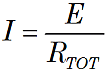
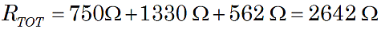
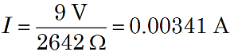
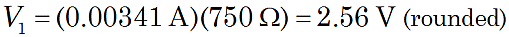
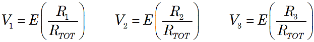

Calculating Voltage in Series Circuits
 Figure 1. Resistors in series. |
When resistors are connected in series, the current through each resistor is the same. This is clear because all the current entering the first resistor in the series must exit from the last. However, Ohm's Law tells us that the voltage across each resistor will depend on that current value I and each R-value.

Ohm's Law gives the circuit current as

where the total series resistances is:

An Example
Suppose the circuit in Figure 1 above has R1 = 750 Ω, R2 = 1.33 kΩ, and R3 = 562 Ω, with E = 9 V. Then

and so

Thus, you can calculate the voltage drop across each resistor.

And similarly for V2 and V3.
Note: It is important to carefully handle units with metric prefixes. Above, we adjusted the decimal point and units so that the formula for current yielded volts/ohms = amperes, and similarly, the formula for voltage yielded amperes × ohms = volts. With careful attention to the prefixes and decimal points, some folks can use shortcuts like volts/kilohms = milliamperes, milliamperes × kilohms = volts, and so forth.
Voltage Dividers
By combining the results of the above calculations of current and voltage we obtain:

The voltage drop across each series resistor is equal to a simple fraction of the supplied voltage. Thus series circuits are sometimes considered "voltage dividers" since the supply voltage is divided among the series resistances.